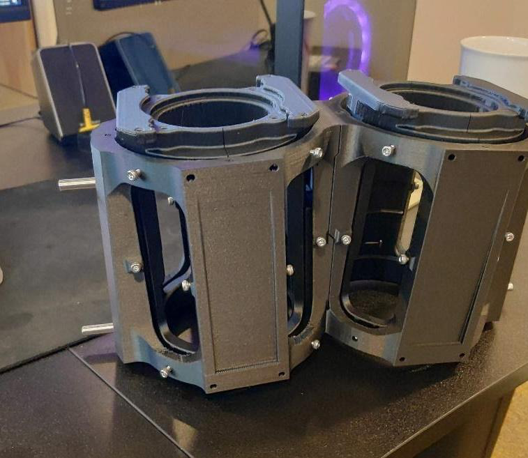
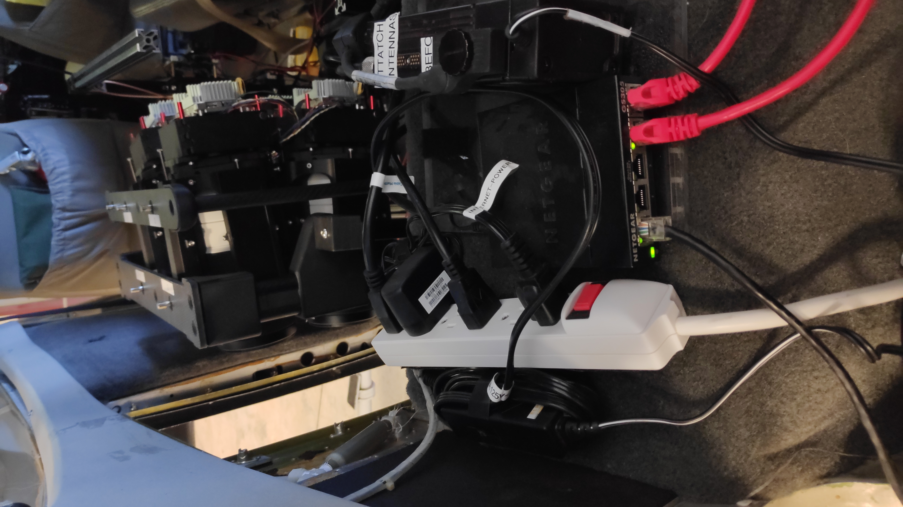

Project Summary
As a Mechatronics Engineer at Transparent Sky, I prototyped a modular, aircraft-mounted gigapixel-class Wide Area Motion Imaging (WAMI) system. The system mounts under a Cessna and captures high-resolution wide-area imagery for persistent surveillance and motion tracking. My focus was the aerodynamic composite pod enclosure, multi-camera housing, and the electromechanical integration of the sensor suite.


Aerodynamic Composite Pod

- Designed an aerodynamic fiberglass composite pod to house the full WAMI camera array, optimized for low drag and thermal management at cruise altitude.
- Created detailed SolidWorks models of the pod structure, internal camera mounts, vibration isolators, and cable routing to ensure electromagnetic compatibility.
- Coordinated with composite fabrication vendors to translate the CAD design into a flight-worthy shell within weight and cost constraints.
Multi-Camera Housing & FOV Optimization


- Designed and 3D-printed modular camera mount housings that allow rapid sensor swap-out for different mission payloads without structural disassembly.
- Optimized individual camera pointing angles to maximize overlapping coverage while maintaining a seamless composite gigapixel mosaic.
- Validated the field-of-view geometry in SolidWorks against ground-sampling distance requirements at target operating altitudes.
Pod Interior & Systems Integration

- Routed power, data, and cooling lines inside the pod with serviceability in mind: all harnesses are labeled and accessible through removable panels.
- Integrated thermal management to keep cameras and compute hardware within operating temperature across a wide range of ambient conditions.
Team & Mentorship
- Recruited and mentored interns and junior engineers for design and manufacturing roles, establishing a peer-review workflow for CAD releases.
Outcome
The prototype delivered a flight-ready WAMI enclosure that successfully integrated the full camera array and supporting electronics. The project demonstrated rapid mechanical prototyping, composite design, and cross-disciplinary systems integration under tight aerospace constraints.